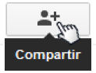
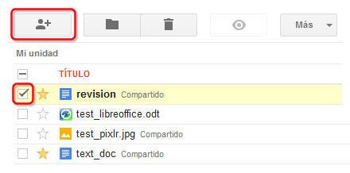
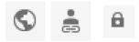

A continuación veremos las posibilidades que nos ofrece Drive para compartir nuestros archivos con otros usuarios:
La posibilidad de compartir archivos con otras personas, facilita el trabajo colaborativo pudiendo trabajar sobre un documento sin tener que enviarlo cada vez que lo editemos.
Podremos configurar diferentes formas de compartir, así como los permisos que puede tener cada usuario con los que compartimos archivos.
Si trabajamos sobre documentos creados con las herramientas de ofimática de Drive, podremos incluso trabajar a tiempo real con varias personas editando un mismo documento a la vez.

Como primer paso para compartir un archivo, deberemos seleccionarlo y a continuación pulsar el botón "Compartir" que se encuentra entre los botones superiores que aparecen tras la selección.

Como alternativa, una vez seleccionado, también podemos hacer clic sobre el menú "Más" y luego seleccionar la opción "Compartir". El mismo menú podríamos desplegarlo si hacemos clic derecho sobre el archivo a compartir.
Aparecerá entonces la ventana de "Configuración para compartir". En esta ventana encontramos varios apartados que nos permitirán configurar cómo compartir los archivos.
En la parte superior, encontramos un enlace que podremos utilizar para compartir rápidamente directamente enviando el enlace. Incluso podríamos enviarlo a personas que no dispongan de una cuenta de Drive (es necesario que el archivo no sea privado).
En la parte central, podremos ver los permisos del archivo y las personas que tienen acceso al mismo.
En la parte inferior encontramos la opción de añadir colaboradores para que puedan trabajar con el archivo. Para añadir personas, debemos introducir las direcciones de correo electrónico de los colaboradores.

"Quién tiene acceso", pulsaremos sobre el enlace "Cambiar.". Abrirá una nueva ventana donde podremos especificar una de las tres formas de compartir.
Por defecto, todos los archivos son "Privados". Esta configuración significa que sólo podrán acceder aquellas personas con las que hayamos compartido el archivo de forma manual, introduciendo su correo electrónico. Es la forma más recomendable de compartir información.
Debemos tener mucho cuidado con las otras dos opciones, ya que cualquier persona podría acceder a nuestro archivo y no tendremos control sobre quién lo hace.
El permiso "Público en la Web" permite que cualquier persona que encuentre el archivo, pueda acceder a él sin necesidad de identificarse.
El permiso "Cualquier usuario que reciba el enlace" es similar al anterior, con la diferencia de que el archivo no se hace público para todo el mundo, sino que sólo podrán acceder aquellas personas que dispongan del enlace. Hay que aclarar que el enlace que enviemos a una persona puede ser reenviado o publicado en cualquier sitio web, por tanto, aunque compartamos mediante enlace, debemos tener las mismas precauciones que con el anterior permiso ya que no tenemos control de quiénes accederán al mismo.
Podemos compartir nuestros archivos con tantas personas como necesitemos y a cada persona, podremos otorgar permisos diferentes.
Para configurar los permisos de cada usuario, debemos pulsar el enlace que se encuentra a la derecha de su nombre. Aquí veremos el permiso que posee actualmente y al pulsarlo, se despliegan las opciones disponibles.
Según nuestras necesidades, podremos hacer que el usuario:
Una configuración importante es la que se encuentra al final de la ventana, que permite especificar si los usuarios con permiso de edición pueden añadir personas para compartir un archivo nuestro y también cambiar los permisos de las personas con las que estamos compartiendo. Pulsando sobre el enlace "Cambiar", podremos especificar nuestra preferencia.